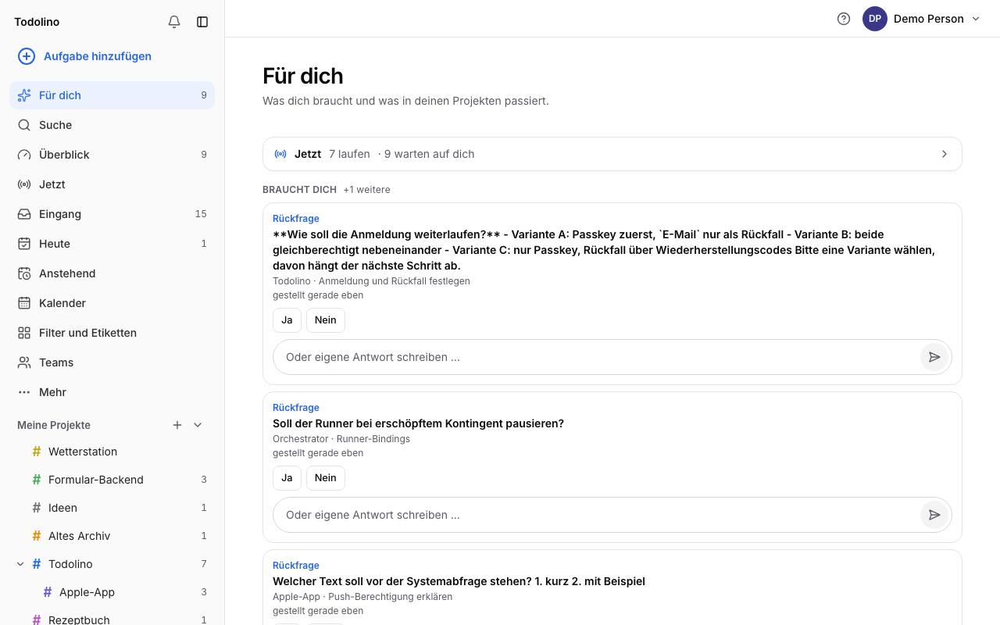
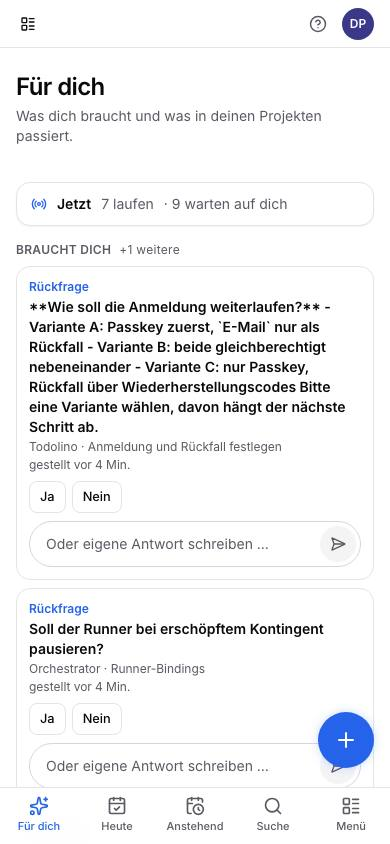
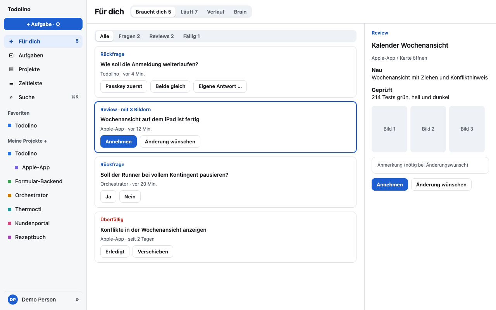
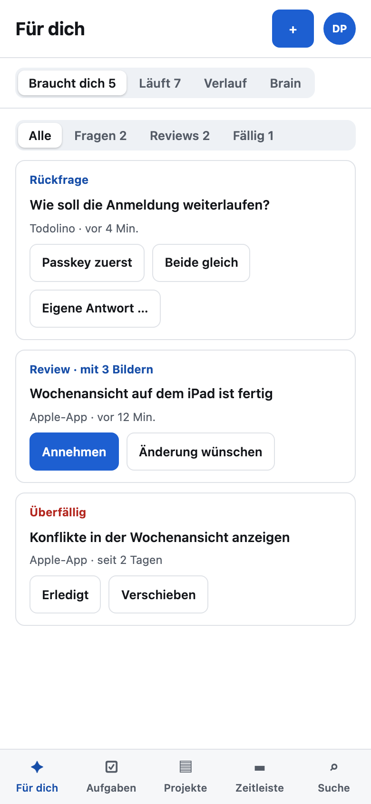

Vorher/Nachher der Startseite „Für dich“ (Demodaten). Rechts Wireframe, nichts davon ist gebaut.




| Klicks (Desktop / Handy) | vorher | nachher |
|---|---|---|
| Karte anlegen (offenes Projekt) | 3 / 3 | 2 / 2 |
| Frage beantworten (sichtbar) | 1 / 1 | 1 / 1 |
| Review mit Bericht entscheiden | 2 / 2 | 2 / 2 |
| Projekt wechseln | 1 / 2 | 1 / 2 |
| Einstellung: Brain-Vollmacht öffnen | 3 / 3 | 2 / 2 |
| Orte und Bedienelemente | vorher | nachher |
|---|---|---|
| Menüziele der Seitenleiste | 15 | 5 |
| Einstellungs- und Hilfeseiten | 33 | 10 |
| Popover-Menüs / Dialoge | 9 / 18 | 4 / 11 |
| Detailfenster / Kartenreiter | 2 / 6 | 1 / 3 |
| Bedienelemente je Listenzeile | 5 | 2 |
„Vorher“ am Code und lokal durchgeklickt, „nachher“ aus dem Konzept (nicht gemessen). Plus eigene Hauptansicht „Zeitleiste“.